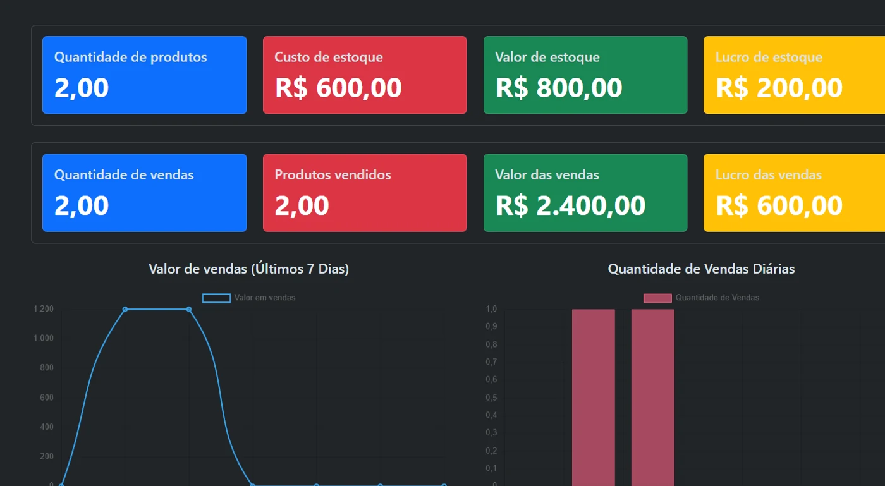
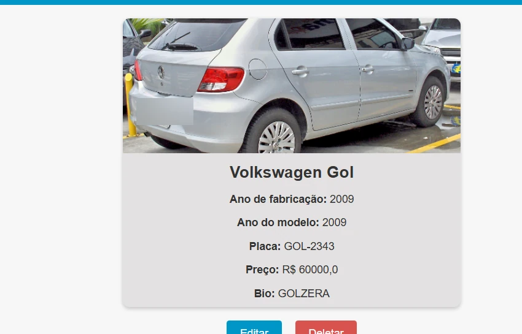
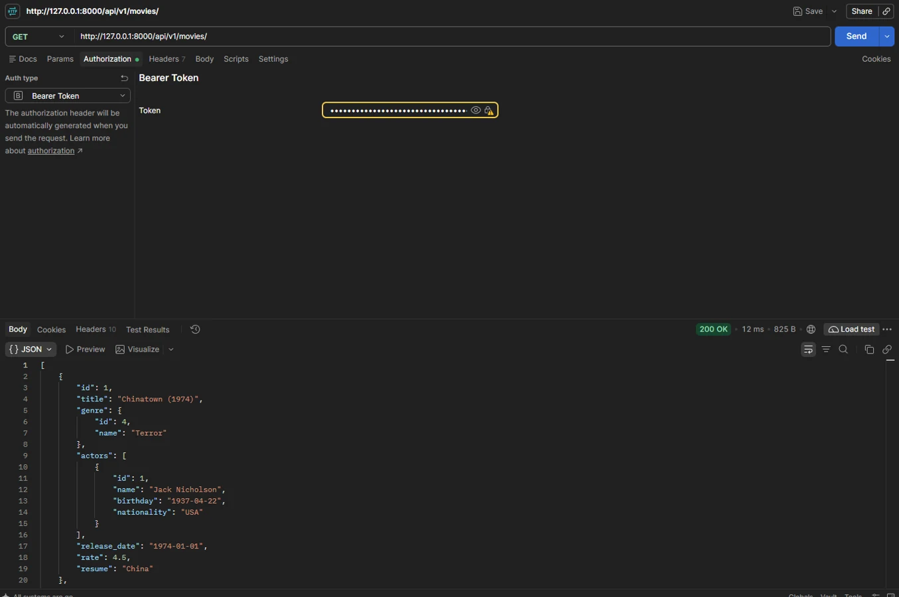
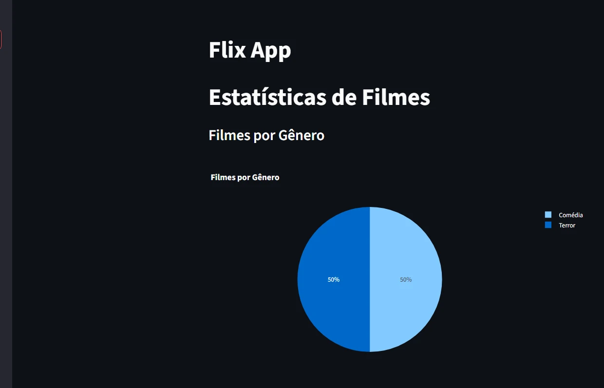

Portfólio pessoal
Ricardo
Marassi.
Sou formado em Ciência da Computação e tenho experiência em TI. Hoje, estou focado em desenvolver projetos com Python e aprender mais sobre automação e inteligência artificial.
01 / 03Trabalhos selecionados
Projetos.




Um pouco sobre mim
Um pouco
sobre mim.
Trabalhei com suporte e infraestrutura de TI, cuidando de computadores, redes e sistemas. Essa experiência me deu uma boa base para entender problemas e buscar soluções.
Atualmente, estou estudando desenvolvimento com Python e construindo projetos com Django e APIs. Quero continuar aprendendo e colocar esse conhecimento em prática.
Vamos conversar?